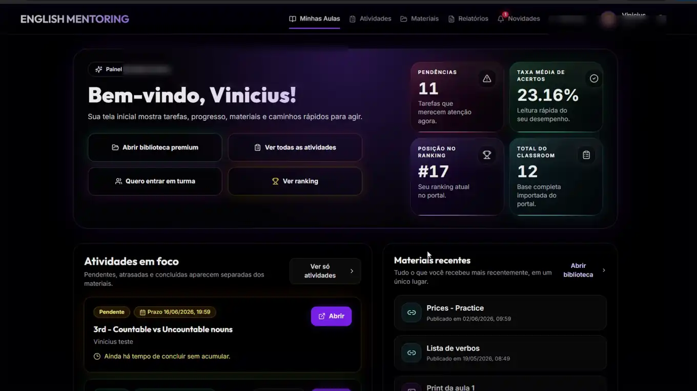
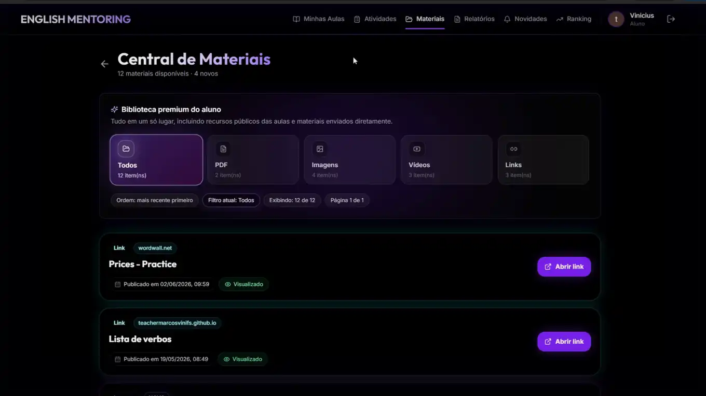
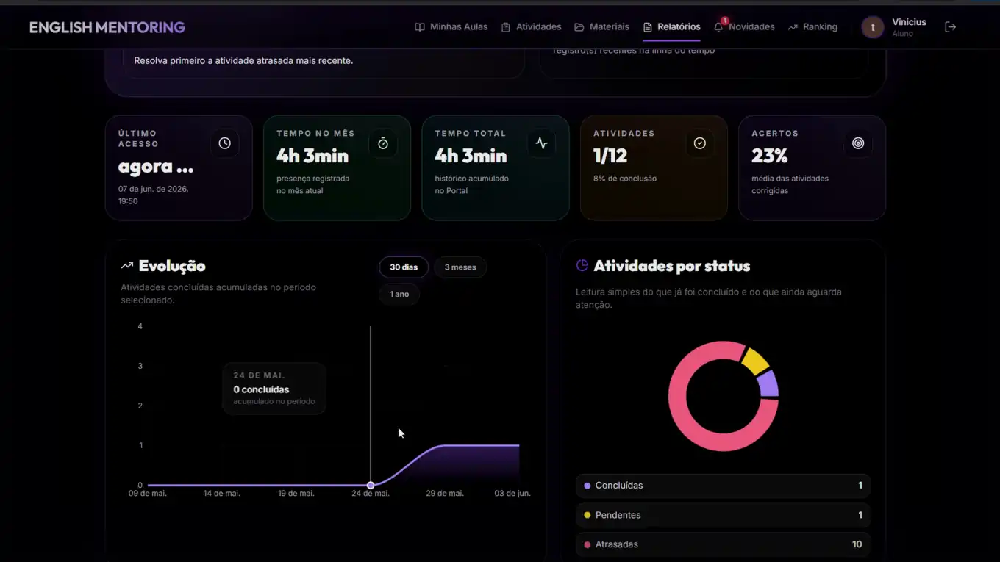
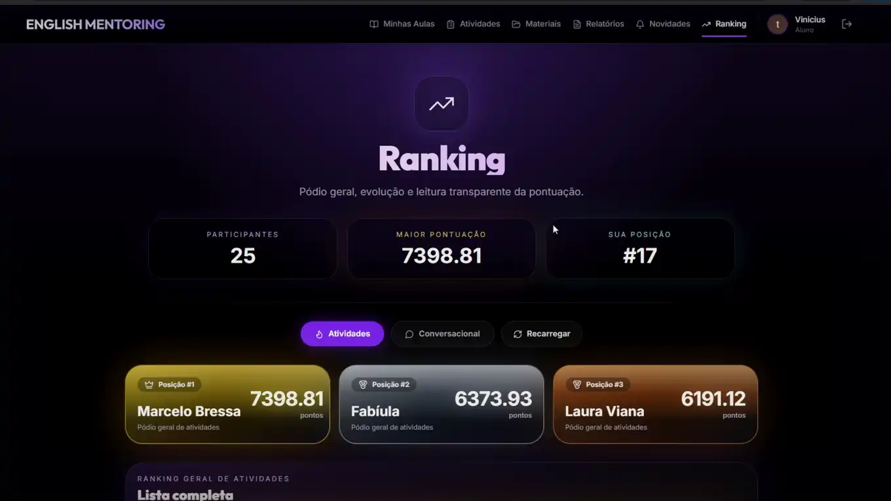
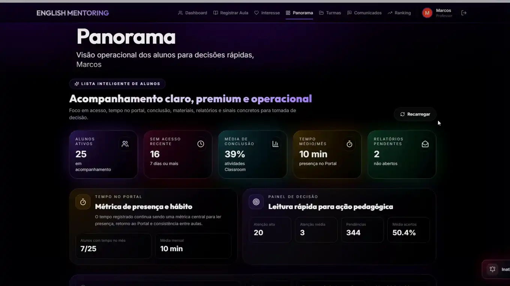
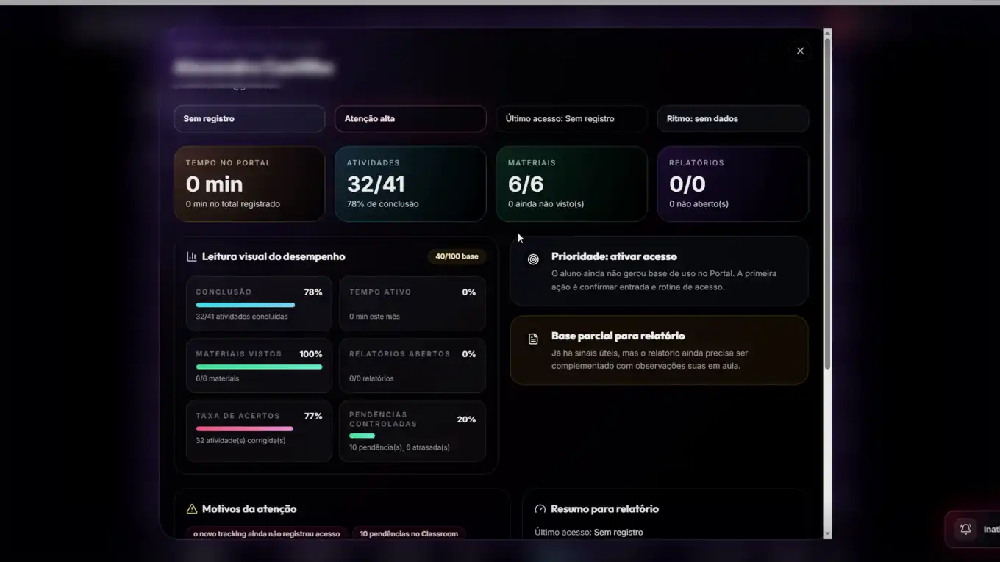
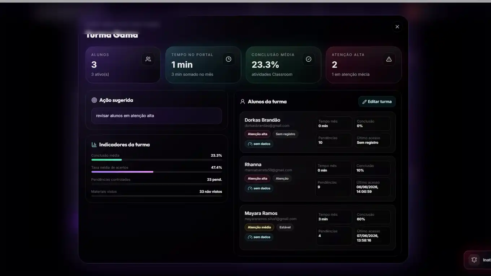

Materiais
PDFs, imagens, vídeos e links publicados para consulta.
Meus alunos têm acesso a um portal próprio. É nele que ficam materiais publicados, atividades, informações de acompanhamento e outros recursos usados ao longo das aulas.

O Portal funciona como um ponto central para o aluno encontrar o que foi publicado e acompanhar parte da sua rotina de estudo.
PDFs, imagens, vídeos e links publicados para consulta.
Tarefas e atividades ligadas ao que está sendo trabalhado.
Informações que ajudam o aluno a visualizar sua rotina e progresso.
Um único lugar para encontrar recursos e informações relacionados às aulas.
As imagens abaixo são do sistema real usado com os alunos.



Eu uso o Portal para acompanhar alunos e turmas, publicar materiais e reunir informações que ajudam na organização das aulas.



Se você tem interesse em estudar inglês comigo, pode ver primeiro os formatos e mensalidades ou falar diretamente pelo WhatsApp. Por e-mail: marcosvinifs@gmail.com.